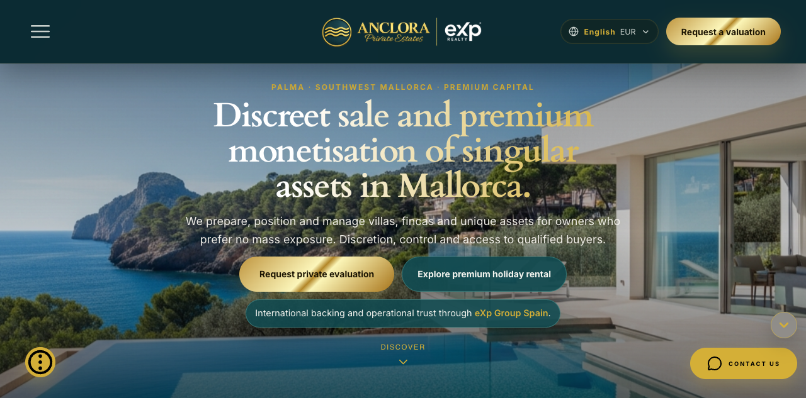
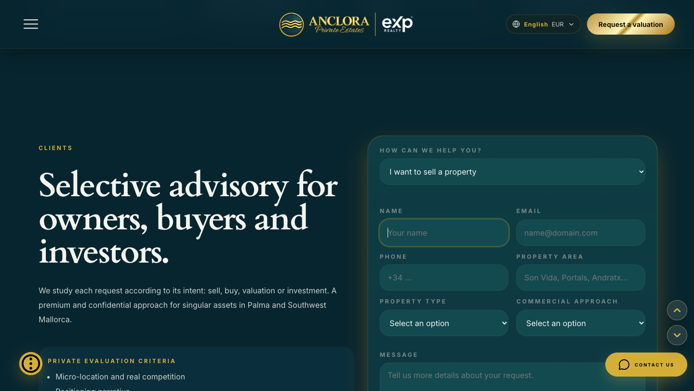
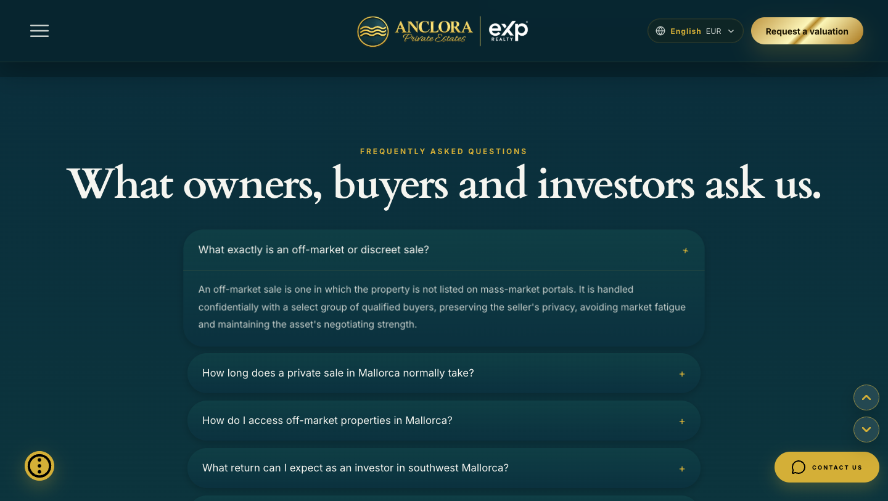
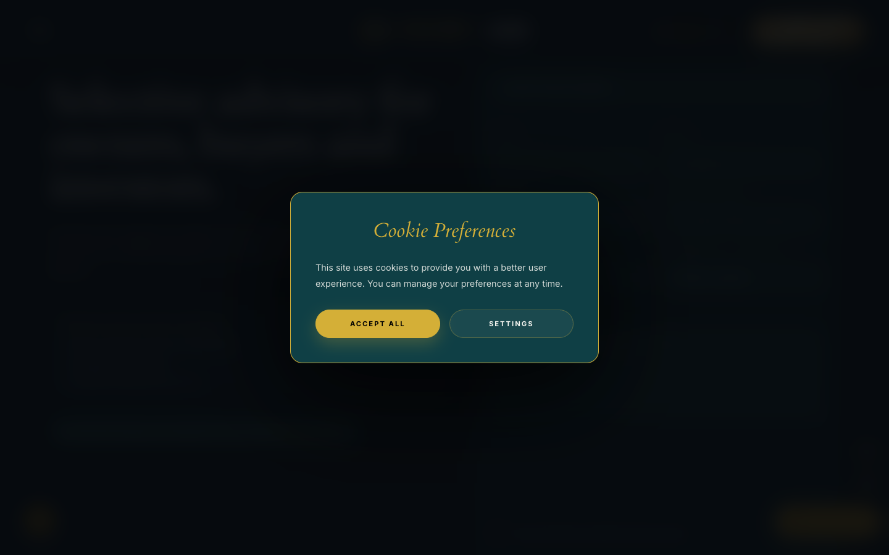
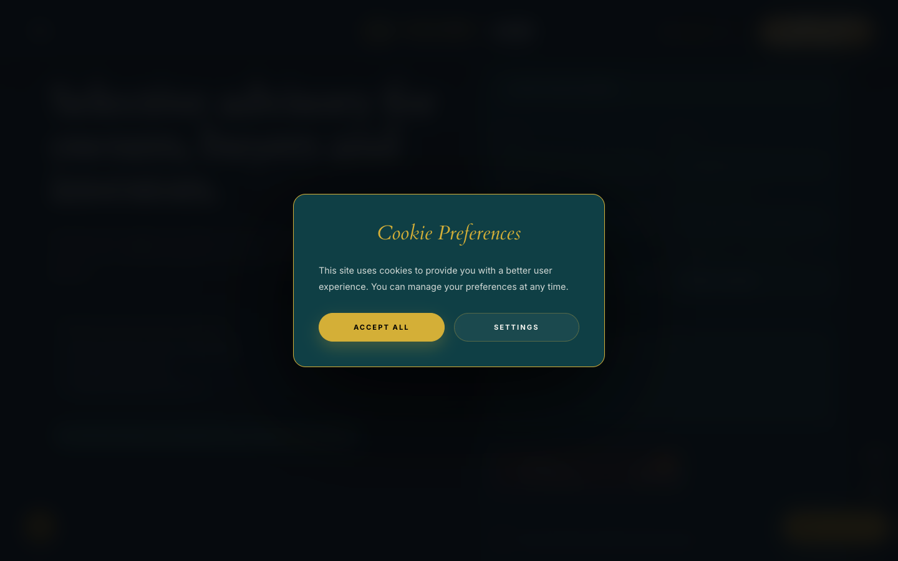

Anclora Private Estates Landing is a real, carefully built MARKETING_SITE: eleven fully-translated languages, three distinct lead-capture forms serving three different audiences (owner/seller, Synergi partners, Data Lab subscribers), a disciplined navy-teal-and-controlled-gold visual language, and a genuinely restrained hero that states offer, audience and trust signal within the first viewport at every tested breakpoint. This is not template luxury — the type system (Cardo/Inter/Fraunces), the palette, and the absence of a public property catalogue (a deliberate echo of the "discreet, off-market" promise) are coherent brand decisions, not decoration.
The dominant problem is not on the page a visitor lands on — it is what happens the moment that visitor tries to share it or a search engine tries to index it. The page's own canonical link, Open Graph tags, Twitter card and hreflang alternates all point to https://anclora.com/private-estates — a domain whose TLS certificate has expired, confirmed by a direct connection attempt during this audit. Every international buyer who receives this link via WhatsApp, LinkedIn or a shared social preview is one click from a browser security interstitial, not the property page. This sits directly against the domain-profile question this audit is built around: private-client trust.
Canonical/OG/hreflang metadata resolves to an unreachable, cert-expired domain (anclora.com), disconnected from the real, working deployment.
Editorial Hub content (headings, article cards, category labels, date formatting) is hardcoded in Spanish regardless of the selected language — confirmed in production in English and German.
Privacy Policy never mentions cookies, analytics, or the behavioral signals (scroll depth, time-on-page, CTA clicks) that are attached to Seller Intake submissions.
The page is a single ~14,770px scroll (≈16 screens at 1440×900); the Partners and Data Lab forms sit at 59% and 68% depth respectively — reachable only by audiences willing to scroll past two other audiences' content first.
Overall assessment: the on-page experience is closer to authentic private-client advisory than most "luxury" landing pages this audit's doctrine warns about — restrained, specific about Mallorca, calm in its use of gold. What undermines the promise is not the surface but its edges: a broken canonical destination, a translation system with one real gap, and a consent/disclosure model that is more careful in code (consent-gated analytics, opt-in marketing checkbox) than in the policy text a visitor is asked to trust.
| Field | Value |
|---|---|
| SURFACE_MODE | MARKETING_SITE |
| SURFACE_MODE_SOURCE | CODE+BROWSER |
| SURFACE_MODE_CONFIDENCE | HIGH |
| SURFACE_MODE_AUTO_DETECTED | true (auto-detection agrees with the user's declared MARKETING_SITE hint) |
| SURFACE_MODE_CONFIRMED_BY_BROWSER | true — production DOM inspected end to end |
| SURFACE_MODE_MISMATCH_WARNING | none |
| PLATFORM_MODE | WEB (override, as instructed) |
| DOMAIN_PROFILE | LUXURY_REAL_ESTATE (override, as instructed) |
| PRIMARY_SURFACE | MARKETING_SITE (single page, anchor-routed) |
| SECONDARY_SURFACES | 3 static content routes (/privacy, /terms, /legal) — evaluated as LEGAL content, not a separate surface |
Why MARKETING_SITE and not LANDING_PAGE: the site has no single dominant CTA or single audience. It hosts six distinct audience narratives (buyer, seller/owner, investor, holiday-rental client, Synergi partner, Data Lab subscriber), three independent lead-capture forms, a footer navigation with five in-page destinations, and an editorial content hub. A single-offer LANDING_PAGE scorecard would misclassify this breadth as "off-message"; it is a deliberate, navigable marketing site compressed onto one scrolling page rather than routed pages — itself a notable architectural choice (see §Scroll Narrative).
Skill metadata: SKILL.md front-matter declares version 1.5.0; the sibling skill.yaml declares 1.4.0. SKILL_METADATA_VERSION_MISMATCH = TRUE. Per the skill's own external-reference authority order (§1B.7: "1. This SKILL.md / current AOS contracts") and the release notes' own statement that v1.5.0 is "the current working version, not yet represented by a committed release," this audit treats SKILL.md v1.5.0 as the effective, authoritative contract — a packaging lag in skill.yaml, not a substantive contradiction.
package.json)private-estates-tokens.css, components.css) — not Tailwindvercel.json: catch-all → index.html)| README claims | Tailwind CSS styling |
| Observed (code) | No tailwindcss dependency anywhere; real system is custom CSS tokens |
| Verdict | STALE DOC — ENGINEERING_SUPPORT, no user impact |
| Brand promise | "Discreet, off-market, no mass exposure" |
| Observed | No public property catalogue anywhere on the site — consistent with the promise, not a gap |
| Verdict | COHERENT |
FINDING_SCOPE note: the Tailwind/README mismatch is classified ENGINEERING_SUPPORT — it does not degrade the UX scorecard, but is surfaced because a future contributor relying on the README would build the wrong mental model of the codebase.
| Audience | Entry point (observed) | Primary CTA | Confidence |
|---|---|---|---|
| Owner / Seller | Hero → "Request private evaluation" | Seller Intake form (#clientes) | HIGH |
| Buyer (domestic + international) | Mallorca Focus micro-locations | Same intake form, intent selector = "buy a premium property" | HIGH |
| Investor (national / international / UHNW) | Investor audience section | Intake form, intent = "investment opportunities"; Data Lab early access | HIGH |
| Holiday-rental owner | Hero secondary CTA "Explore premium holiday rental" | Intake form, intent = "monetise as holiday rental" | HIGH |
| Referral / Synergi partner | "A selective network for collaborators" section | Dedicated Synergi application form (#partners) | HIGH |
| Editorial reader | "Lecturas para decisiones..." hub | "Ver todos los análisis" (Spanish-only, all locales) | HIGH |
CAN_EACH_VISITOR_IDENTIFY_THEIR_PATH_WITHOUT_READING_THE_ENTIRE_PAGE? Partially. The hero and its two CTAs correctly split buyer/seller-adjacent intent from holiday-rental intent immediately. But Investor, Synergi Partner and Data Lab audiences have no above-the-fold signal — a partner or investor must scroll 36%–68% of a 14,770px page before reaching content addressed to them, with no persistent audience switcher to jump there directly (the floating controls are Cookies / Down / Contact, not an audience index).
| Journey | Result | Evidence |
|---|---|---|
| J1 First impression (hero, no scroll) | Value prop + dual CTA + trust line all visible, no scroll, at 1440×900 and 390×844 | MEASURED_BROWSER / PRODUCTION |
| J3 Mallorca intent → CTA | Micro-location narrative → same shared intake form | MEASURED_BROWSER / PRODUCTION |
| J4 Holiday rental | Reachable from hero secondary CTA; lands on shared form pre-filtered by intent | MEASURED_BROWSER / PRODUCTION |
| J6 Seller / owner intake | Branching field set observed; native-only validation on empty submit (see §Forms) | MEASURED_BROWSER / PRODUCTION |
| J7 Partner (Synergi) | Reached at 59% scroll depth; independent form, own consent checkbox | MEASURED_BROWSER / PRODUCTION |
| J9 Contact | Direct mailto: and tel: links present alongside forms — high-touch channel, not funnel-only | MEASURED_BROWSER / PRODUCTION |
| J11 Language change (ES→EN→DE) | Full chrome + hero + FAQ translate correctly; Editorial Hub does not (see §I18n) | MEASURED_BROWSER / PRODUCTION |
| J12 Cookie / legal | Consent modal on first load; /privacy, /terms, /legal resolve to real content | MEASURED_BROWSER / PRODUCTION |
| J10 Final CTA → destination | Resolves to #contacto anchor, not an external booking/checkout step — consistent with an advisory (not transactional) product | MEASURED_BROWSER / PRODUCTION |
Not executed, by design: a real form submission (would create a real lead/email — excluded under the read-only/no-external-write mandate), mobile-landscape orientation, and staging/preview environments (none discovered — see §Evidence Coverage).
| Order | Section | Y (px @1440×900) | Classification |
|---|---|---|---|
| 1 | Hero (value prop, dual CTA, trust line, mini valuation flow) | 0–~950 | CORE / CONVERSION |
| 2 | "Four steps" process overview | ~950 | SUPPORTING / TRUST_BUILDING |
| 3 | Mallorca Focus (4 micro-locations) | 1,967 | CORE / TRUST_BUILDING |
| 4 | Holiday Rental monetisation | 3,860 | AUDIENCE_SPECIFIC / CONVERSION |
| 5 | Investor audiences (3 profiles) | 5,146 | AUDIENCE_SPECIFIC |
| 6 | "A process without empty promises" | ~6,100 | SUPPORTING / TRUST_BUILDING |
| 7 | Seller/buyer/investor intake form | 6,770 (46%) | CORE / CONVERSION |
| 8 | FAQ (5 questions) | ~7,700 | SUPPORTING / OBJECTION_HANDLING |
| 9 | Synergi partner application form | 8,775 (59%) | AUDIENCE_SPECIFIC / CONVERSION |
| 10 | Data Lab territorial signals + early-access form | 10,089 (68%) | AUDIENCE_SPECIFIC / CONVERSION |
| 11 | Editorial Hub ("Lecturas...") | ~11,200 | EDITORIAL |
| 12 | Contact (email + phone, direct) | 12,648 | TRUST_BUILDING / CONVERSION |
| 13 | Final CTA | ~13,600 | CONVERSION |
| 14 | Footer (nav anchors + legal links) | 14,300–14,771 | LEGAL / SUPPORTING |
DOES_EACH_SECTION_EARN_THE_NEXT_ONE? Mostly yes for the buyer/seller narrative (process → geography → audience-fit → form → objections), which reads as deliberate trust-building sequencing, not padding. The exception is structural: Partners and Data Lab — two entire audiences with their own forms — are placed after the primary seller/buyer FAQ, with no shortcut. A partner arriving from a referral link with no anchor deep-link must scroll through five unrelated audience sections first.

| FIRST_VIEWPORT_VALUE_PROP_VISIBLE | YES — "Discreet sale and premium monetisation of singular assets in Mallorca" |
| FIRST_VIEWPORT_PRIMARY_CTA_VISIBLE | YES — "Request private evaluation" (desktop & mobile) |
| FIRST_VIEWPORT_PROOF_VISIBLE | YES — eXp Group Spain affiliation line, doubled by the "eXp Realty" lockup in the navbar itself |
| AUDIENCE_CLARITY | GOOD — two CTAs split sell/buy from holiday-rental intent immediately |
| MALLORCA_SIGNAL | EXCELLENT — "Palma · Southwest Mallorca · Premium capital" eyebrow + real coastal-villa photography, not generic stock luxury |
| CONTENT_DENSITY | GOOD — one headline, one sentence of support copy, no stacked value-prop paragraphs |
CAN_A_HIGH_VALUE_VISITOR_EXPLAIN_THE_OFFER_AFTER_5–10_SECONDS? Yes: discreet, high-value asset sale/monetisation, in Mallorca, backed by an international brokerage (eXp), with a clear next step. This is not premised on cinematic motion or scale — a restrained credit to the doctrine that premium is disciplined hierarchy, not decoration.
src/content/site-copy.ts (3,577 lines): eleven independent, complete siteCopyXx objects — es, ca, de, en, sv, fr, it, da, nl, no, pt — MEASURED_CODEhtml lang attribute updates correctly on switch (en → es → de) — MEASURED_BROWSERThe Editorial Hub section is not wired into the locale system at all. src/content/editorial/hub-copy.ts hardcodes title, eyebrow, intro and ctaLabel in Spanish; EditorialHubSection.tsx additionally hardcodes a CATEGORY_LABELS record in Spanish and formats every article date with toLocaleDateString("es-ES", …) plus a literal "min de lectura" string — regardless of the active locale.
Confirmed live: switching to English or German changes every other heading on the page, but "Lecturas para decisiones mejor informadas." and all three article cards remain in Spanish in both cases.
A second, distinct instance of the same pattern: with the UI in English, the Seller Intake form's "PROPERTY TYPE" dropdown offers Villa, Ático, Apartamento premium, Finca, and its "COMMERCIAL APPROACH" dropdown offers Evaluación confidencial, Venta en exclusiva, Venta selectiva sin portal masivo — all option labels hardcoded in Spanish, verified directly in the production accessibility-tree snapshot while the rest of the same form ("NAME," "EMAIL," "PROPERTY AREA," validation copy) was correctly in English. This is inside the site's primary lead-capture form, not a secondary content block — see F10.
DISCOVERABILITY_FRICTION: the site never writes a locale into the URL (no ?lang=, no path prefix) despite index.html declaring hreflang alternates that assume exactly that scheme (see next section) — a German lead cannot be sent a link that opens directly in German; language state resets to the browser/document default on every fresh load.
index.html declares, verbatim:
<link rel="canonical"> | https://anclora.com/private-estates |
og:url | https://anclora.com/private-estates |
og:image / twitter:image | https://anclora.com/og-image.jpg |
hreflang alternates | https://anclora.com/private-estates?lang={es,en,ca,de} |
| Actual audited deployment | https://private-estates-landing.anclora.com/ (the URL this audit was asked to review) |
A direct connection attempt to anclora.com, independently re-verified for this report with curl -v and openssl s_client, returned:
SSL certificate problem: certificate has expired —notBefore=Nov 15 2024,notAfter=Nov 15 2025(expired ~10 months before this audit). The certificate's subject isCN=*.myshopify.com— a wildcard Shopify certificate, not an Anclora-issued one. The same failure occurs in a real Chromium browser (hard "Privacy error" / cert-mismatch interstitial) for bothhttps://anclora.com/andhttps://anclora.com/private-estates.
This is a materially worse condition than a simple lapsed renewal: the certificate Chrome is being offered doesn't even belong to Anclora's own infrastructure, which suggests anclora.com may currently be pointed at unrelated or long-stale DNS/hosting (a parked or expired Shopify storefront), not merely an unrenewed cert on Anclora's own edge. This audit does not have DNS/hosting-account evidence to determine which — flagged as EXTERNAL_INFRASTRUCTURE pending confirmation.
Meanwhile https://private-estates-landing.anclora.com/ — the real, working deployment — returns a clean HTTP/2 200 and is not referenced anywhere in the page's own canonical/OG/hreflang metadata.
Practical consequence: a social preview card (WhatsApp, LinkedIn, X) built from this page's og:url will carry a link to a domain that presents a certificate-expired security warning to any recipient who clicks it — precisely the audience (international, high-value, security-conscious) this product is trying to earn trust with. Search engines resolving the declared canonical face the same dead end, which can suppress indexing of the real, working page in favor of a URL that returns nothing.
FINDING_SCOPE: PRODUCT_ACCESS (the metadata is part of this repository and actively misdirects real distribution channels) with an EXTERNAL_INFRASTRUCTURE component (the certificate itself is not controlled by this repository). Not evaluated: whether anclora.com is meant to host this product at all, or is a legacy/unrelated property — outside repo-context evidence.
| Form | Fields | Notable design |
|---|---|---|
| Seller / Buyer / Investor / Rental intake | Intent selector (5 options) branches the field set; Name*, Email*, Phone, Property Area*, Property Type, Commercial Approach, Message*, consent* + marketing (optional) | Progressive disclosure by declared intent — genuinely adaptive, not one generic contact form |
| Synergi partner application | Name*, Email*, Service Type, Profile description*, consent* | Separate audience, separate consent checkbox |
| Data Lab early access | Name*, Email*, "Why are you interested"*, consent* | Lightweight, appropriately short for a newsletter-weight ask |

aria-invalid is null on the field (verified via DOM inspection) after the failed attempt.FORM_UX / ACCESSIBILITY finding: validation relies entirely on the browser's built-in required constraint behavior. This is functionally safe (the form cannot be submitted empty) but has two real costs: (1) a screen-reader user gets no accessible failure announcement, since no aria-invalid or live-region message is set; (2) native validation bubbles are unstyled and not consistently rendered across browsers/mobile Safari, so the failure can be silent or off-brand at the exact moment a private-client prospect is asked to trust the form with sensitive intent ("I want to sell a property").
Also observed: the Cloudflare Turnstile widget embedded in the Seller Intake form reported Unable to connect to website and repeated console warnings ([Cloudflare Turnstile] Error: 110200) during this automated pass. This is consistent with Turnstile's designed behavior toward headless/automated browsers and is not presented as a confirmed defect for human visitors — it does mean this audit cannot independently verify, end to end, that a real human submission completes successfully in production. Recorded as TEMPORARY_EXECUTION_WORKAROUND / evidence gap, not a finding.

| DESKTOP_COVERED (1440×900) | MEASURED_BROWSER |
| TABLET_COVERED (768×1024) | MEASURED_BROWSER (hero only, lighter depth) |
| MOBILE_PORTRAIT_COVERED (390×844) | MEASURED_BROWSER — no horizontal overflow (scrollWidth === clientWidth === 390) |
| MOBILE_LANDSCAPE_COVERED | NOT_EVALUATED |
| Floating-control overlap with hero CTAs (mobile) | NO OVERLAP — measured bounding boxes: hero CTAs end at y≈635; floating Cookies/Down/Contact controls begin at y≈717–773 |
| Touch target sizing | FAIR — Cookies (48×48) and Contact (50×50) meet the 44×44 guideline; the "Down" scroll button measures 42×42, marginally under it |
| Dimension | Rating | Basis |
|---|---|---|
| Task / Goal Completion | GOOD | Every audience can reach an appropriate form; success/failure states not end-to-end verified (safety) |
| Clarity | GOOD | Hero + section eyebrows consistently state audience and purpose |
| Brand Positioning | EXCELLENT | Discreet/off-market promise reflected structurally, not just in copy |
| Information Architecture | FAIR | No audience index; partner/investor content requires deep scroll with no shortcut |
| Public Site Shell | GOOD | Persistent nav, working language/currency selector, non-overlapping floating controls |
| Content Discovery | FAIR | Footer anchor nav exists but is the only cross-section wayfinding aid |
| Content Sequence | GOOD | Buyer/seller narrative sequencing is deliberate; partner/data-lab placement is the exception |
| Editorial Hierarchy | POOR | Real hub, but entirely unlocalized (§I18n) — undermines "editorial authority" for 10 of 11 locales |
| CTA Hierarchy | GOOD | Consistent "Open private conversation" labeling reused predictably; no competing primaries observed |
| Conversion Architecture | GOOD | Three audience-specific forms + direct email/phone, not one generic contact box |
| Form Friction | FAIR | Well-scoped fields, but native-only validation with no aria-invalid |
| Trust | GOOD | eXp Realty affiliation, specific FAQ answers, direct human contact — undercut by the canonical/cert-expiry issue at the edges |
| Visual Storytelling | GOOD | Real, specific Mallorca photography; no stock-luxury sameness |
| Premium Visual Quality | EXCELLENT | Disciplined type system, restrained gold accent, no decorative clutter |
| Memorability | GOOD | "Discreet sale," micro-location narrative and the eXp affiliation are distinct anchors |
| Accessibility | FAIR | FAQ/combobox semantics correct; form error state and dedicated accessibility-audit composition both incomplete |
| Responsive | GOOD | No overflow across three widths tested; one sub-guideline touch target |
| System Feedback / Error Recovery | FAIR | Native browser feedback only on form failure; no submission ever completed end to end |
| Mallorca Differentiation (domain) | EXCELLENT | Micro-location framing reads as domain expertise, not scenery |
| Private Client Confidence (domain) | FAIR | Strong on-page; undercut by canonical/cert and disclosure gaps a sophisticated buyer's team would notice |
| Application Shell / Viewport Economy / Checkout / Task Completion (app-only) | NOT_APPLICABLE | No authenticated workspace; no cart/checkout |
Per the skill's finding-scope rule, only PRODUCT_UX and PRODUCT_ACCESS findings count toward the UX scorecard (F1, F2, F5, F6, F7, F8, F10 — 7 items). F3 and F4 are COMPLIANCE_REVIEW (LEGAL_REVIEW_REQUIRED, not asserted as unlawful by this audit) and are reported separately, not scored as UX defects. F9 is ENGINEERING_SUPPORT (documentation drift, no user-facing impact) and does not degrade the UX scorecard either.
index.html canonical/og:url/hreflang → anclora.com/private-estates; independently re-verified via curl -v and openssl s_client: certificate expired 2025-11-15, subject CN=*.myshopify.com (not an Anclora certificate) — MEASURED_CODE + direct TLS verification, PRODUCTIONhttps://private-estates-landing.anclora.com/ (or fix/retire anclora.com's certificate if that domain is the intended long-term home); align hreflang scheme with how locale switching actually works (see F2)vercel.json catch-all rewrite for /privacy, /terms, /legalsrc/content/editorial/hub-copy.ts and articles.ts hardcode Spanish content outside the site-copy.ts locale system; EditorialHubSection.tsx hardcodes CATEGORY_LABELS and toLocaleDateString("es-ES", …) — confirmed unchanged live in English and German (MEASURED_CODE + MEASURED_BROWSER, PRODUCTION)siteCopyXx structure; parameterize toLocaleDateString by active locale; localize "min de lectura"/privacy read live (PRODUCTION); no mention of cookies/analytics/tracking. useBehaviorSignals.ts + SellerIntakeForm.tsx:262 confirm scroll-depth/time-on-page/CTA-click metadata is attached to real submissions (MEASURED_CODE)aria-invalid confirmed null on the failing field via DOM query after the attemptaria-invalid/aria-describedby wiring on each required field, consistent with the site's own visual languagehtml lang and content client-side only; no ?lang= param or path prefix appears in the address bar at any point (MEASURED_BROWSER)README.md "Estilos | Tailwind CSS"; no tailwindcss in package.json; real system is hand-authored CSS tokens (MEASURED_CODE)combobox "PROPERTY TYPE" lists Villa, Ático, Apartamento premium, Finca; combobox "COMMERCIAL APPROACH" lists Evaluación confidencial, Venta en exclusiva, Venta selectiva sin portal masivo — while every surrounding field label, placeholder and validation message in the same form was correctly in English (MEASURED_BROWSER, PRODUCTION)siteCopyXx structure alongside the rest of the form copy, the same fix path as F2

getCookieConsent() defaults to false) — the privacy-respecting direction, in code, ahead of the policy text<button> elements with correct aria-expanded state, keyboard-operable with no extra work| BROWSER_AVAILABLE | true (agent-browser CLI, Chromium via CDP) |
| PRODUCTION_BROWSER_COVERED | true — sole browser environment audited |
| STAGING_BROWSER_COVERED / PREVIEW_BROWSER_COVERED | false — no staging/preview URL discovered in README, .env.example, vercel.json, or docs |
| LOCAL_BUILD_BROWSER_COVERED | false — not started; production coverage was sufficient and safer |
| DEPLOYED_SURFACE_COVERED | true |
| DESKTOP_COVERED (1440×900) | true |
| TABLET_COVERED (768×1024) | true (lighter depth — hero only) |
| MOBILE_PORTRAIT_COVERED (390×844) | true |
| MOBILE_LANDSCAPE_COVERED | false |
| LIGHT_THEME_COVERED | NOT_APPLICABLE — dark-only by design, no toggle exists |
| DARK_THEME_COVERED | true |
I18N_COMPOSED (dedicated i18n-integrity-check AOS skill) | UNAVAILABLE — TOOL_COMPATIBILITY_GAP; substituted with direct browser (ES/EN/DE) + code inspection (all 11 locale files) in §I18n |
ACCESSIBILITY_COMPOSED (dedicated accessibility-audit AOS skill) | UNAVAILABLE — TOOL_COMPATIBILITY_GAP; substituted with manual browser semantics checks (FAQ, comboboxes, form aria-invalid) |
| DESIGN_SYSTEM_COMPOSED / VISUAL_REGRESSION_COMPOSED | UNAVAILABLE — no aos CLI in this environment; not composed |
| repo-preflight / aos-compliance-preflight / change-impact-analysis | UNAVAILABLE — same reason |
| SURFACE_MODE_AUTO_DETECTED | true |
| SURFACE_MODE_CONFIRMED_BY_BROWSER | true |
| Form end-to-end submission (success/failure states) | NOT TESTED — read-only/no-real-lead mandate; native validation only |
| Locales rendered live | es, en, de (3 of 11); remaining 7 verified as complete in code only |
| Historical regression | N/A — docs/audits/ contained no prior report before this run; first audit of record |
Anclora Private Estates Landing largely delivers the ultra-premium, private-client experience it is designed to project: a restrained visual language, a real and specific Mallorca narrative rather than generic luxury scenery, six coherently differentiated audience paths each with its own appropriately-scoped form, and direct human contact channels sitting alongside every conversion point rather than behind it. The parts of the experience a visitor actually reads and clicks through — hero, FAQ, forms, language selector, cookie modal — hold up to the "quiet luxury" doctrine this audit applies: no glassmorphism, no gold-as-wallpaper, no generic three-column filler.
Where the distance between aesthetic and authentic private-client advisory actually opens up is at the seams the visitor doesn't see directly: a canonical/social/search identity that points to a certificate-expired domain, an editorial section that silently reverts to Spanish for ten of eleven audiences, a privacy policy that is more conservative than the code it describes, and an information architecture that makes three of six audiences scroll past everyone else's content to find their own. None of these breaks the promise on the page itself — but for the specific buyer this product is built for (someone who will check a link before clicking it, and read a policy before trusting it), they are exactly the details that would be noticed.